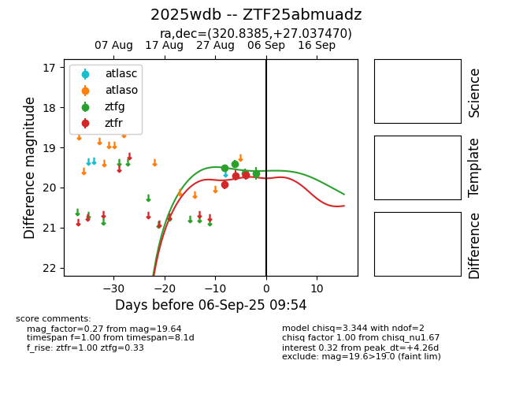

FINK: ZTF25abmuadz
Lasair: ZTF25abmuadz
ALeRCE: ZTF25abmuadz
TNS: 2025wdb
YSE: 2025wdb
ZTF25abmuadz (ztf,fink)
2025wdb (tns,yse)
ATLAS25kuf (atlas)
PS25hik (panstarrs)
equatorial (ra, dec) = (320.8385,+27.03747)
galactic (l, b) = (75.9227,-16.29246)

last ztfg=19.95, ztfr=19.90
5 ztfg, 7 ztfr detections